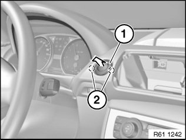

Start / Stop Switch: Service and Repair
61 31 023 Removing And Installing/Replacing Start/Stop Switch

Necessary preliminary tasks:
- Remove centre fresh-air grille

Press latch mechanisms (2) together and unclip Start/Stop switch (1) with corresponding ribbon cable in direction of arrow.
IMPORTANT:
Carefully unlock and disconnect associated plug connection for ribbon cable.
Replace the ribbon cable if damaged.
The ribbon cable leads to:
- Control unit for Car Access System
- Insert for radio control key
Remove Start/Stop switch (1).